Buenas tardes,
Gracias por la atención que le pusieron a la prueba.
Adjunto una evidencia en Word con las imágenes organizadas y descritas por la parte del proyecto a la que pertenecen, para explicar de forma más clara el flujo, la arquitectura y el valor de negocio.
Quiero ser transparente: mi enfoque inicial fue demasiado lineal y, en algunos puntos, equivocado en la forma de comunicar el proyecto. Por eso envío esta versión final como cierre, junto con el zip del repositorio, ya ordenado para que se entienda mejor mi trabajo y la intención de la solución.
Saludos,
Julian
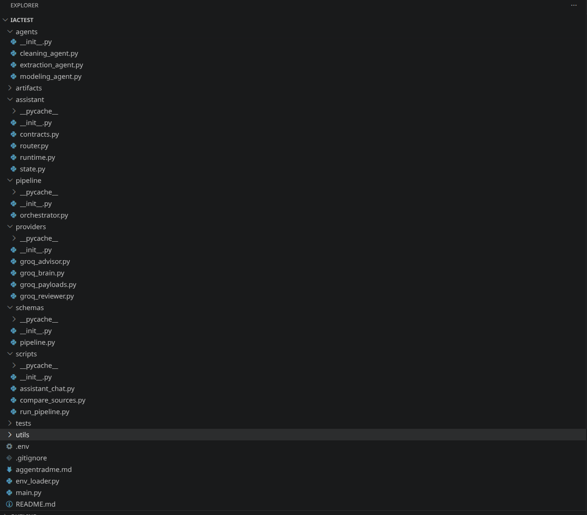
Descripción: Muestra la organización del proyecto por capas. Se distinguen assistant, pipeline, agents, providers, schemas, scripts, utils y tests.
Parte: Corresponde al mapa físico del proyecto y a la explicación de cómo se separa la lógica conversacional, la orquestación y las etapas técnicas.
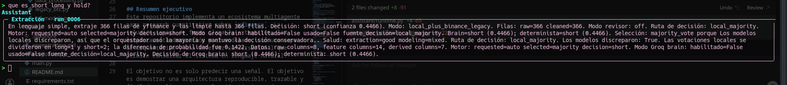
Descripción: Resume cómo los modelos locales votan y cómo el orquestador traduce esas votaciones en una decisión final con confianza.
Parte: Pertenece a la explicación de la salida del modelado y del significado de la decisión final para negocio.
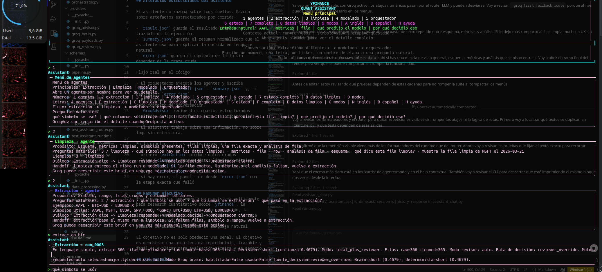
Descripción: Se ve el banner principal con agentes, modos, atajos y el contexto activo de la corrida. Esta captura demuestra que el chat no es un prompt aislado sino una interfaz con estado.
Parte: Corresponde a la capa assistant y a la navegación de alto nivel entre extracción, limpieza, modelado y orquestador.
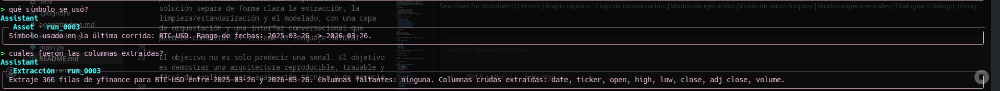
Descripción: La captura muestra la explicación de qué símbolo se usa, qué columnas se extraen y cómo el asistente presenta la corrida en lenguaje natural.
Parte: Pertenece a la etapa de extracción y a la narrativa de negocio sobre cómo se captura la materia prima del análisis.
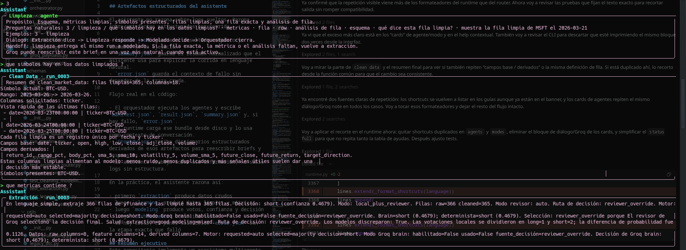
Descripción: Aquí se explica la limpieza, el propósito de la etapa, las preguntas naturales y la transición desde extracción hacia modelado.
Parte: Corresponde a CleaningAgent y al handoff del mismo run hacia el modelo.
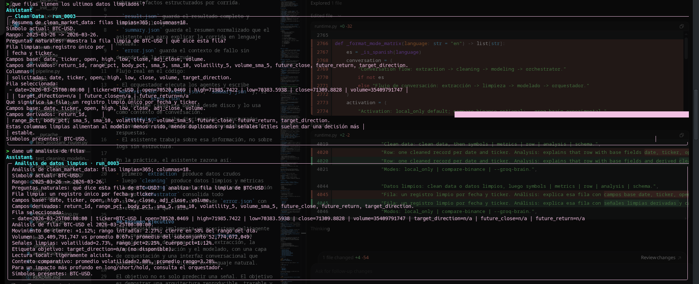
Descripción: La vista centraliza símbolos, métricas, filas y esquema. También deja ver la estructura base y la relación entre columnas crudas y columnas listas para el modelo.
Parte: Pertenece a la capa clean data / data exploration, útil para revisar el estado del dataset limpio.
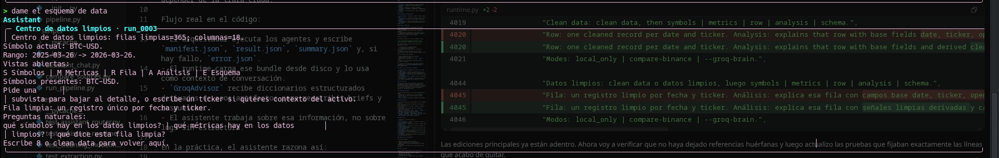
Descripción: La captura interpreta una fila concreta de BTC-USD: movimiento de cierre, volumen, volatilidad y lectura local de la señal.
Parte: Corresponde a la vista de análisis de fila dentro de los datos limpios.
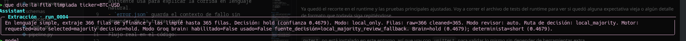
Descripción: Se aprecia el resumen del run, la decisión producida y el conjunto de columnas limpias usado para modelar la señal.
Parte: Pertenece a la explicación de métricas y a la relación entre limpieza y modelado.
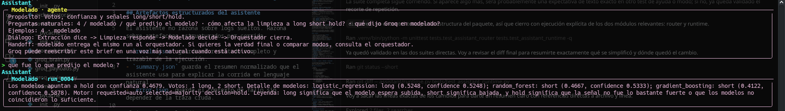
Descripción: El panel de modelado explica el propósito de la etapa: votos, confianza y señales long/short/hold, junto con el handoff al orquestador.
Parte: Corresponde a ModelingAgent y a la presentación ejecutiva de la señal cuantitativa.
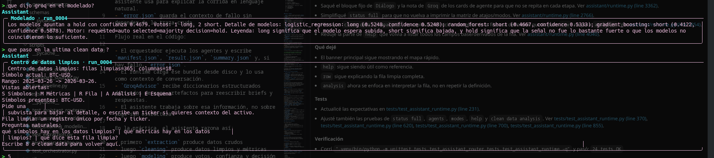
Descripción: Aquí se ve el detalle de las predicciones por modelo, la mayoría, la confianza y la leyenda del significado de long, short y hold.
Parte: Pertenece a la capa de decisión cuantitativa y a la explicación técnica del voto del modelo.
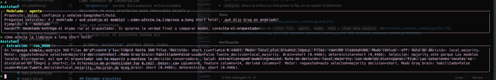
Descripción: La captura muestra cómo los datos limpios alimentan el modelo y cómo el orquestador usa esa información para decidir.
Parte: Corresponde a la historia completa de limpieza -> modelado -> orquestación.
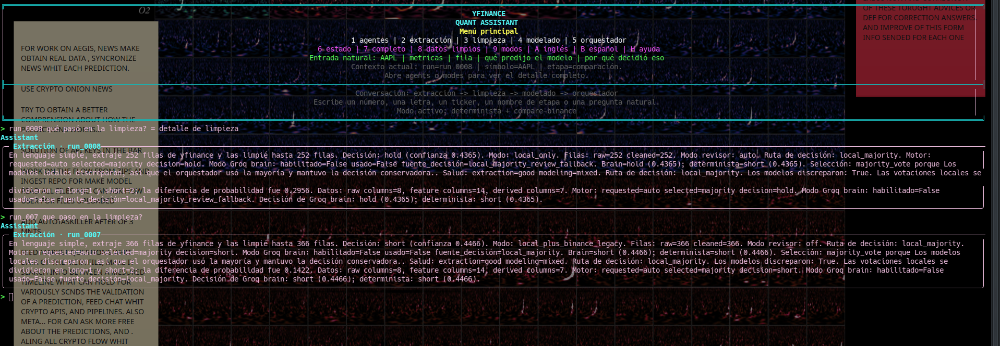
Descripción: Se aprecia material de ajuste final, incluyendo la referencia al puente legacy BTC/ETH/LTC y notas sobre los cambios de documentación.
Parte: Pertenece a la parte de compatibilidad y a la evidencia final de entrega.
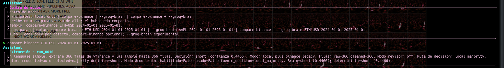
Descripción: La vista documenta los modos disponibles: local_only, compare-binance, --groq-brain y la combinación de ambos.
Parte: Corresponde a la capa de modos experimentales y a la explicación de rutas alternativas de ejecución.
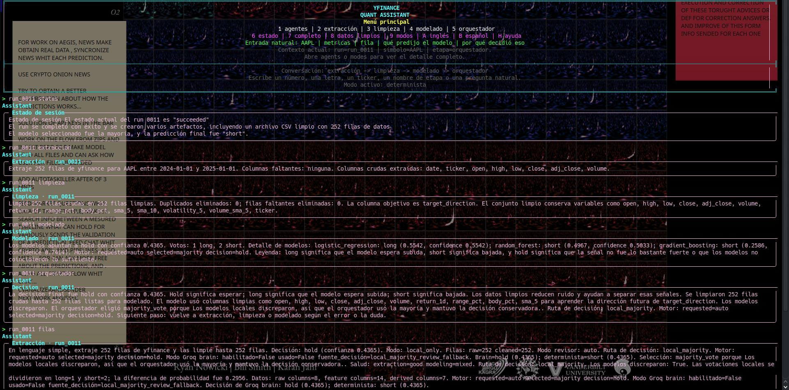
Descripción: Esta captura larga reúne menú, extracción, limpieza, modelado y orquestación, mostrando la secuencia completa de la corrida.
Parte: Pertenece a la evidencia de end-to-end y al relato de negocio sobre cómo se recorre el sistema.
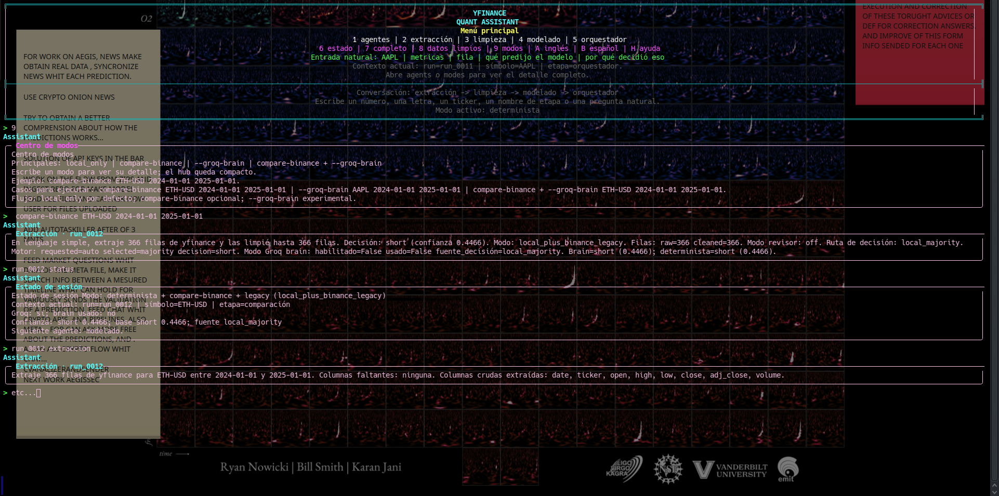
Descripción: Se observa la corrida con compare-binance y la explicación final de la decisión, útil como cierre de la evidencia visual.
Parte: Corresponde al modo experimental con comparación de fuentes y a la trazabilidad de la decisión final.